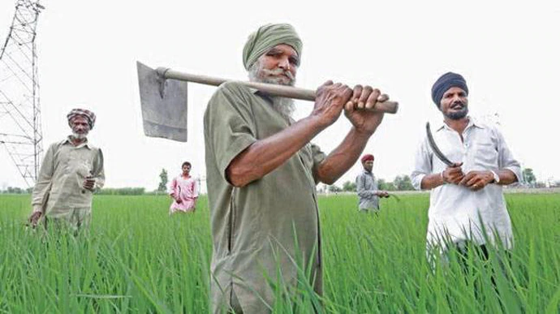

Soil Distribution in Punjab

Punjab Soil and Crops
Best crops for irrigation
Punjab primarily has Alluvial Soil, highly fertile due to the rivers Sutlej, Beas, and Ravi, making it ideal for crops like wheat, rice, sugarcane, maize, and cotton.
challanges in punjab
- Over use of water for paddy cultivation is causing a severe water crisis.
- Unpredictable weather, droughts, and floods negatively impact crop yields.
- Whiteflies, locusts, and fungal infections frequently damage crops.
Market demand
- You can be profitable by boosting profits by switching to maize, which requires less water, has high market demand, offers government support, enables multi-cropping, reduces input costs, avoids stubble burning, and benefits from processing, contract farming, and subsidies